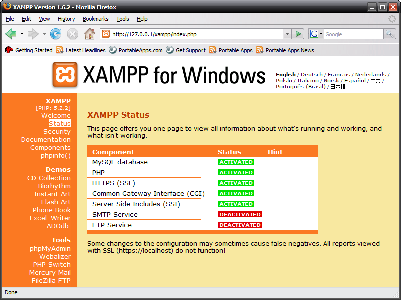

L'ULTIMA versione di XAMPP è 1.8.21
Per far funzionare XAMPP
Per realizzare una web app php è necessario avere a disposizione un interprete php . quello che
noi utilizzeremo nelle aule delle informatica è quello fornito di apache.
Per far partire questo strumento è necessario :
1)Aprire Esplora Risorse
2)Andare in C e scegliere mostra (visualizza risorse cartella)
3)Entrare nella cartella “XAMPP-PORTABLE”
4)Scegliere e cliccare 2 volte il file “XAMPP-CONTROL
5)Nella finestra che si apre scegliere nella prima riga in fianco ad APACHE il pulsante start
6)Nella finestra che compare scegliere OK
7)I file PHP devono essere messi nella cartella C:XAMPP-PORTABLE/HTobcs
